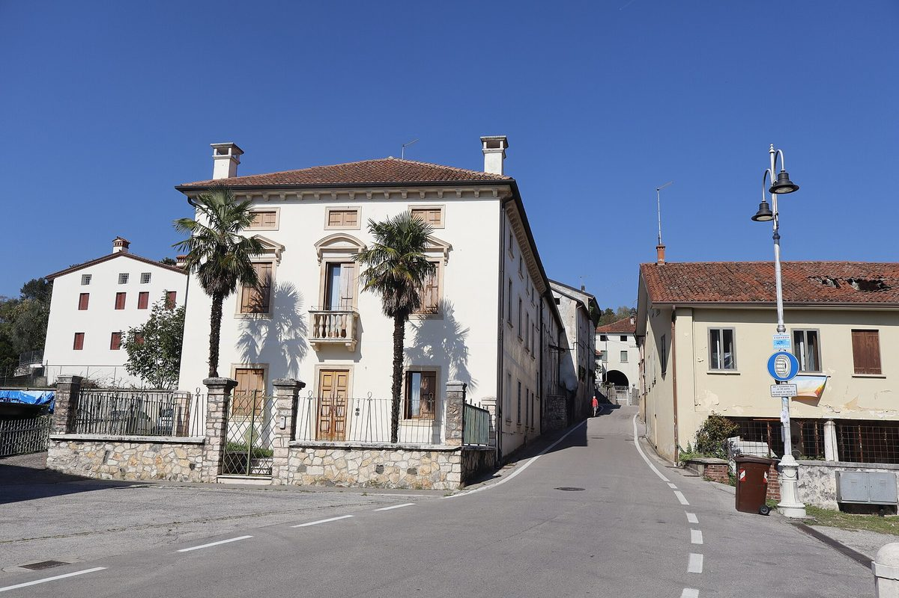

이탈리아 알토비첸티노 재생에너지공동체 본격 가동…시 18곳·조합원 169명, 2027년 말 잠재 7.2MW

2026년 1월 운영 시작해 73kW 가동·97kW 곧 추가, 시 체육관 지붕 400kW 등 2.17MW 준비…11월부터 태양광·히트펌프 시민 공동구매
이탈리아 베네토주 비첸차 북부의 재생에너지공동체(CER) 알토비첸티노가 본격 운영 단계에 들어서면서 주민과 기업을 상대로 태양광·저장장치·히트펌프·창호 공동구매를 시작한다. 2024년 11월 '참여형 재단' 형태로 세워져 2026년 1월부터 운영 중인 이 공동체에는 현재 169명이 조합원으로 가입했고, 그 가운데 18개 시가 설립 회원이며 설립을 도운 카리베로나 재단은 2026년 7월~2027년 12월 발전·안정화 계획에 2만5,000유로를 추가 지원하기로 했다. 지금까지 73kW 설비가 가동됐고 이미 계통에 연결된 13개 설비 97kW가 곧 더해지며, 2027년 상반기에는 마라노비첸티노 시 체육관 지붕 400kW를 포함한 새 설비 4곳 2.17MW가 가동될 예정이다. 국가복구계획(PNRR) 에너지공동체 공모로 지원받은 조합원 설비 2.85MW와 참여 의사를 밝힌 약 2MW를 더하면 2027년 말 잠재 규모는 7.2MW로 추산되며, 공동체는 조합원 250명과 변전소 권역마다 공유 전력 비율 60%를 목표로 내걸었다. 산드로 마쿨란 회장은 만든 전기를 같은 시간대에 써 줄 소비가 더 필요하다며 시민과 기업의 참여가 "결정적"이라고 말했고, 소비자로 가입할 때는 전기 공급사를 바꾸거나 설비를 달 필요가 없다. 공동구매는 에너지기관 AESS와 함께 EU 사업 'Citizen Led Renovation'의 하나로 11월 24일 추글리아노에서 출범하며, 그에 앞서 11월 3·10·17일 무료 온라인 강좌가 열린다.
시민에너지 관점
EU는 2018년 재생에너지지침 개정(RED II)으로 재생에너지공동체를 법에 담아 시민·지자체·중소기업이 함께 전기를 만들고 나눌 길을 열었고, 알토비첸티노에서는 18개 시가 그 공동체의 설립 회원으로 직접 들어갔다. 가동 설비가 아직 수백kW 수준이라 7.2MW는 먼 목표라는 시각도 있지만, 이 공동체가 설비 용량과 함께 변전소 권역별 공유 전력 60%를 목표로 삼은 것은 이익이 전기를 많이 만드는 데서가 아니라 이웃이 같은 시간에 나눠 쓰는 데서 생긴다는 점을 정확히 짚은 것이다. 공급사를 바꾸지 않고도 소비 조합원으로 가입하게 문턱을 낮추고 시 체육관 지붕을 공동 발전소로 내놓을 때, 지붕이 없는 주민도 공동체의 주인이 되고 공유 이익이 지역 안에 머문다. 국내에서도 여러 시·군이 함께 설립 주체가 되는 광역 에너지공동체를 허용하고, 설비가 없는 주민도 소비 조합원으로 참여해 이익을 나눌 수 있게 제도를 열어야 한다.
출처: L'Eco Vicentino 2026-10-28 기자 미표기 원문 보기
イタリア・アルトヴィチェンティーノ再生可能エネルギー共同体が本格稼働…18市・組合員169人、2027年末に潜在7.2MW
2026年1月に運営開始し73kWが稼働・97kWが間もなく追加、市体育館屋根の400kWなど2.17MWを準備…11月から太陽光・ヒートポンプの市民共同購入
イタリア・ヴェネト州ヴィチェンツァ北部の再生可能エネルギー共同体（CER）アルトヴィチェンティーノが本格的な運営段階に入り、住民と企業を対象に太陽光・蓄電池・ヒートポンプ・窓の共同購入を始める。2024年11月に「参加型財団」として設立され、2026年1月から運営しているこの共同体には現在169人が組合員として加入し、うち18市が設立会員で、設立を支援したカリヴェローナ財団は2026年7月〜2027年12月の発展・安定化計画に2万5,000ユーロを追加支援することを決めた。これまでに73kWの設備が稼働し、すでに系統に接続された13設備97kWが間もなく加わる予定で、2027年上半期にはマラーノ・ヴィチェンティーノ市の体育館屋根400kWを含む新設備4カ所計2.17MWが稼働する見通しだ。国家復興計画（PNRR）のエネルギー共同体公募で支援を受けた組合員設備2.85MWと、参加の意向を示した約2MWを加えると、2027年末の潜在規模は7.2MWと推計され、共同体は組合員250人と変電所圏域ごとの共有電力比率60%を目標に掲げた。サンドロ・マクラン会長は、つくった電気を同じ時間帯に使う消費がもっと必要だとして、市民と企業の参加が「決定的」だと述べ、消費者として加入する場合は電力会社を切り替えたり設備を付けたりする必要はない。共同購入はエネルギー機関AESSとともにEU事業「Citizen Led Renovation」の一環として11月24日にズリアーノで発足し、それに先立ち11月3・10・17日に無料のオンライン講座が開かれる。
市民エネルギーの視点
EUは2018年の再生可能エネルギー指令改正（RED II）で再生可能エネルギー共同体を法に位置づけ、市民・自治体・中小企業がともに電気をつくり分け合う道を開いたが、アルトヴィチェンティーノでは18市がその共同体の設立会員として直接加わった。稼働設備はまだ数百kW規模で7.2MWは遠い目標だという見方もあるが、設備容量とともに変電所圏域ごとの共有電力60%を目標に据えたことは、利益が電気を多くつくることからではなく、隣人が同じ時間に分け合って使うことから生まれるという点を正確に捉えている。電力会社を変えずに消費組合員として加入できるよう敷居を下げ、市の体育館屋根を共同の発電所として差し出すとき、屋根を持たない住民も共同体の主人となり、共有の利益が地域にとどまる。韓国でも複数の市・郡がともに設立主体となる広域エネルギー共同体を認め、設備を持たない住民も消費組合員として参加し利益を分け合えるよう制度を開くべきだ。
出典: L'Eco Vicentino 2026-10-28 記者名なし 原文を読む
意大利上维琴蒂诺可再生能源社区全面运营…18个市镇、169名成员，2027年底潜在规模7.2MW
2026年1月开始运营，73kW已投运、97kW即将并入，市体育馆屋顶400kW等2.17MW在筹备…11月起面向市民联合采购光伏和热泵
意大利威尼托大区维琴察北部的可再生能源社区（CER）"上维琴蒂诺"进入全面运营阶段，并面向居民和企业启动光伏、储能、热泵和门窗的联合采购。该社区于2024年11月以"参与型基金会"形式成立，2026年1月起运营，目前有169名成员，其中18个市镇是创始成员；曾协助其成立的卡里维罗纳基金会已批准为2026年7月至2027年12月的发展与巩固计划追加资助2万5,000欧元。迄今已有73kW设备投运，另有13套已并网、合计97kW的设备即将加入；2027年上半年，包括马拉诺维琴蒂诺市体育馆屋顶400kW在内的4处新设备、合计2.17MW预计投运。加上通过国家复苏计划（PNRR）能源社区招标获得资助的成员设备2.85MW以及已表达加入意向的约2MW，2027年底的潜在规模估计为7.2MW，社区目标是成员达到250名、每个变电站片区的共享电量比例达到60%。社区主席桑德罗·马库兰表示，所发电力需要有在同一时段使用的消费来支撑，市民和企业的参与将是"决定性的"；以消费者身份加入无需更换售电公司，也无需安装设备。联合采购与能源机构AESS合作，作为欧盟项目"Citizen Led Renovation"的一部分，将于11月24日在祖利亚诺启动，此前11月3日、10日、17日还将举办免费线上课程。
市民能源视角
欧盟在2018年修订的可再生能源指令（RED II）中把可再生能源社区写入法律，为市民、地方政府和中小企业共同发电、共享电力打开了通道，而在上维琴蒂诺，18个市镇直接成为社区的创始成员。有人认为投运设备仍只有数百kW，7.2MW目标遥远，但该社区在装机容量之外把各变电站片区共享电量60%定为目标，准确抓住了一个要点：收益并非来自多发电，而是来自邻里在同一时段分享用电。降低门槛、让居民不换售电公司也能以消费成员身份加入，再把市体育馆屋顶拿出来做共同电站，没有屋顶的居民也能成为社区的主人，共享收益也会留在本地。韩国也应允许多个市郡共同发起的广域能源社区，并开放制度，让没有设备的居民也能以消费成员身份参与并分享收益。
来源: L'Eco Vicentino 2026-10-28 未署名 查看原文
Italy's Alto Vicentino renewable energy community reaches full operation with 18 towns and 169 members, eyeing a potential 7.2MW by end-2027
Running since January 2026 with 73kW online and 97kW about to join; 2.17MW in the pipeline including a 400kW town gym roof; a citizens' group purchase of solar and heat pumps starts in November
The Alto Vicentino renewable energy community (CER) in the northern Vicenza area of Italy's Veneto region has entered full operation and is launching a group purchase of solar panels, batteries, heat pumps and windows open to residents and businesses. Set up in November 2024 as a participatory foundation and operating since January 2026, the community now has 169 members, 18 of them founding municipalities, and the Cariverona Foundation, which helped establish it, has approved a further 25,000 euros for its development and consolidation plan from July 2026 to December 2027. So far 73kW of capacity has been activated, 13 installations totalling 97kW that are already grid-connected are about to join, and four new plants totalling 2.17MW, including a 400kW system on the roof of the Marano Vicentino municipal gym, are expected online in the first half of 2027. Adding 2.85MW of members' plants funded through the national recovery plan (PNRR) call for energy communities and about 2MW from parties that have expressed interest, the potential total is estimated at 7.2MW by the end of 2027, with targets of 250 members and 60% shared energy in each primary substation area. President Sandro Maculan said the power being generated needs consumption in the same hours, calling the involvement of local citizens and businesses "decisive," and joining as a consumer requires neither switching electricity supplier nor installing equipment. The group purchase, run with the energy agency AESS under the EU project Citizen Led Renovation, launches on November 24 in Zugliano, preceded by free online courses on November 3, 10 and 17.
Citizen Energy View
The EU's 2018 revision of the Renewable Energy Directive (RED II) gave renewable energy communities a legal footing, opening a path for citizens, local authorities and small businesses to generate and share power together, and in Alto Vicentino 18 towns joined such a community directly as founding members. Some may say 7.2MW is a distant goal while operating capacity is still in the hundreds of kilowatts, but by setting a target of 60% shared energy per substation area alongside capacity, the community has put its finger on the point that the benefit comes not from producing more power but from neighbours using it together at the same time. When the threshold is lowered so people can join as consumer members without changing supplier, and a town gym roof is offered up as a shared power plant, residents without a roof of their own also become owners and the shared benefit stays local. Korea, too, should allow regional energy communities founded jointly by several cities and counties, and open the rules so residents without equipment can take part as consumer members and share the gains.
Source: L'Eco Vicentino 2026-10-28 No byline Read the original